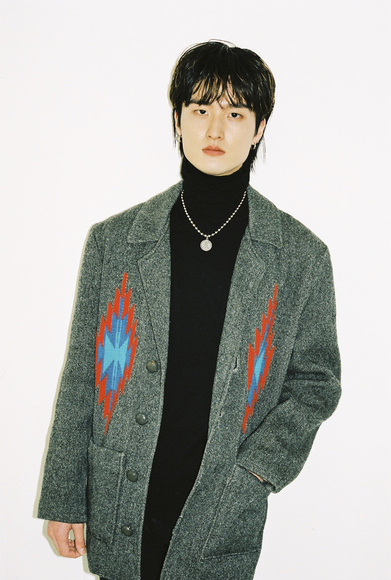
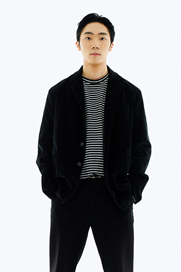
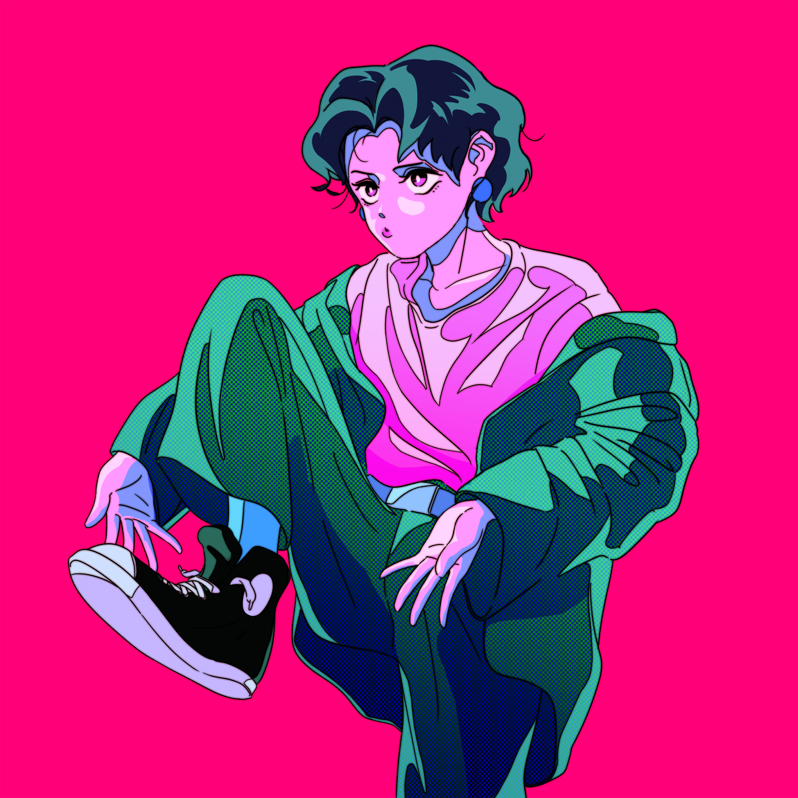
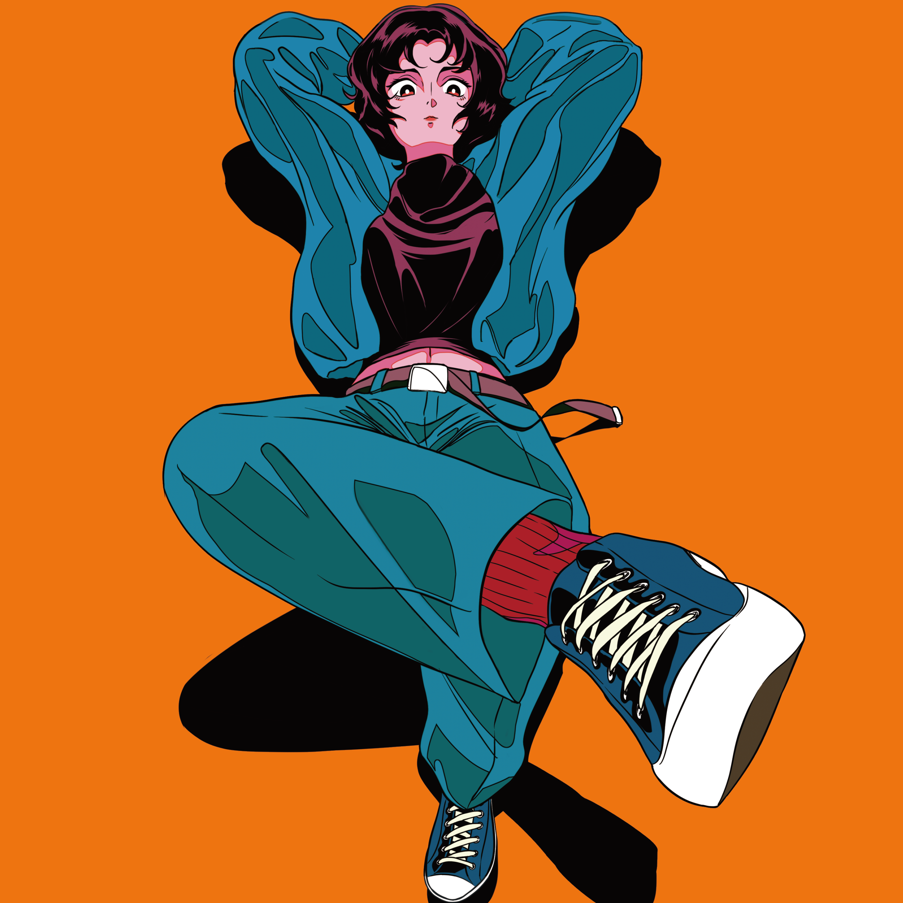

‘투 데이 올드 스니커즈’는 온라인 커뮤니티 ‘음악인의 자유 공간 뮬’에서 만나 결성된 4인조 개러지 록밴드이다.
기타 치는 주해승과 노래하는 심도언, 드럼 치는 손민욱과 미소천사 류호진으로 구성된 투 데이 올드 스니커즈,
aka 투올즈는 2018년 결성 이후 고집스럽게 ‘개러지 록’이라는 한 우물을 파고 있다.
한국 인디 씬에서 개러지 록으로는 성공할 수 없다는 많은 이들의 만류에도 한 가지 장르를 고집하는, 말 그대로 ‘무리하는 애들’이다.
키치한 가사들과 강렬하고 중독성 있는 리프로 단단한 사운드를 만든다.
직선적인 사운드 속에서는 한국 특유의 장단과 장난스러운 선율이 느껴지기도 한다.
정통 개러지록에서 영향을 받았지만 투올즈만의 색깔을 만들어 내며 그들의 고집이 아집이 아님을 증명해 나가고 있다.
2021 KT&G 상상마당 '나의 첫번째 콘서트' 공연팀 선정
2021 STARBUCKS & MINI 바이럴 광고 출연
2021 다방 유튜브 채널 '일상다방사' 홍대편 출연
2019 KT&G 상상마당 '언더 더 루프 With 웨터' 공연팀 선정
2019 무소속프로젝트 본선진출
2018 세계밴드대회 '이머겐자' 국내팀 선발전 결승 진출
SNS
Members
심도언
Shim Do Un
Vocal & Guitar
주해승
Joo Hae Seung
Guitar & Leader

손민욱
Son Min Uk
Drum & Chorus

류호진
Ryu Ho Jin
Bass & Smiling Angel
Music

사기꾼
개러지 록은 음악을 할 만한 좋은 환경과 능력을 갖추지 않아도 충분히 멋진 음악을 할 수 있다는 DIY(Do It Yourself) 정신을 담은 차고 록이다.
'투 데이 올드 스니커즈'는 그들만의 러프한 색깔로 리프 위주의 단단한 사운드를 만들고 노래한다.
가사와 멜로디는 날것의 느낌이 나고 기타, 베이스, 드럼은 강렬하다.
정통 개러지 록에서 영향을 받았지만, 한국적인 개러지 색깔을 만들어가고 있으며,
직접적인 가사들과 중독성 있는 기타 리프로 풀어나간 앨범 안의 곡들에는 ‘투올즈'만의 개성을 담기 위한 흔적이 묻어있다.
Track list
사기꾼TITLE(작사 : 주해승 / 작곡 : 주해승, 심도언)
그래 빨간달이 떴구나 아무것도 변하지 않는다(작사 : 심도언 / 작곡 : 주해승, 심도언)
권태(작사 : 주해승 / 작곡 : 주해승, 심도언)
캐딜락(작사 : 주해승 / 작곡 : 주해승, 심도언)
신발장
‘투 데이 올드 스니커즈'의 첫번째 정규 앨범 [신발장]은, 개러지록을 하겠다는 멤버들의 고집을 모아 만든 음악 적 색깔과 그들이 걸어갈 첫번째 방향을 보여준다.
투올즈만의 개성을 담기위해 노력했던 고민의 흔적들이, 마치 신발장안의 신발처럼 진열되어 있다.
한 인간이 가지는 일관적인 신발 취향과 그럼에도 다양하게 소장하는 신발의 색과 디자인처럼,
서로 다른 형식과 분위기의 11곡은 곡마다 각각의 개성을 뚜렷하게 보여준다.
그러나 모든 곡들은 결국 ‘투올즈'다운 하나의 색깔을 향해 가고 있다는 것을, 직접 들어보면 알게 된다.
단단한 리프와 목소리를 중심으로 그들의 이야기를 최대한 담담하게 전달하면서도 강렬한 사운드를 만들어 낸다.
Track list
한강(작사/작곡 : 심도언)
종이가방(작사/작곡 : 심도언)
그래 빨간달이 떴구나 아무것도 변하지 않는다(작사 : 심도언 / 작곡 : 주해승, 심도언)
재규어TITLE(작사/작곡 : 심도언)
사기꾼(작사 : 주해승 / 작곡 : 주해승, 심도언)
권태(작사 : 주해승 / 작곡 : 주해승, 심도언)
착장(작사/작곡 : 심도언)
주인공(작사 : 주해승 / 작곡 : 주해승, 심도언)
산산조각(작사 : 주해승 / 작곡 : 주해승, 심도언)
저녁(작사 : 주해승 / 작곡 : 주해승, 심도언)
춤을 추게, 여전하게 (Dear Sally)(작사 : 주해승 / 작곡 : 주해승, 심도언)

그림자
앨범을 발매하는 과정은 음악을 하면서 가장 행복하고 보람있는 순간들이지만, 동시에 불안감과 좌절감이 그림자처럼 따라붙는 순간이기도 하다.
불안감 혹은 좌절감을 잠시 떼어 놓고자 눈을 감을 수도 있다.
하지만 이번 싱글을 통해서 그 불안감과 좌절감을 직시하기로 했다.
땅바닥에서 두 발을 잠시 떼어놓을 수는 있어도 곧바로 다시 어딘가에 다리를 지탱해야 하듯, 그림자와 나는 떼어 놓을 수 없기 때문이다. - 심도언
싱글 [그림자]에는 전작인 1집 앨범 [신발장]보다 풍성한 사운드를 담기 위해 노력한 흔적이 보인다.
강렬하면서도 중독성 있는 기타 리프와 멜로디는 그들의 정체성을 만들어 나가는데 핵심적인 역할을 하고 있다.
개러지 록에 대한 고집이 느껴지는 직선적인 사운드도 여전하다.
투 데이 올드 스니커즈와 계속 협업해 나가는 디자이너 나무13 작가의 앨범 커버 속에서 만들어지는 세계관도 인상적이다.
길게 드리워진 그림자를 등지고 그들이 바라보고 있는 곳에는 어떤 것이 있을지 궁금하다.
Track list
그림자TITLE(작사/작곡 : 심도언)
오직 그곳에서만 빛난다
우리는 어디든지 갈 수 있지만 우리가 바라는 빛은 오직 그곳에서만 난다.
구멍 난 마음을 움켜쥐고 우리는 그곳으로 가기로 했다. -주해승
앞서 발매된 [그림자]에 이어 그들이 만든 '빛과 그림자'에 대한 세계관을 보여준다.
길게 드리워진 그림자를 등지고 그들이 바라보고 있는 곳에는 빛이 있다.
밴드 초기에 영향을 받은 정통 개러지 사운드를 따르면서도 투올즈만의 색깔을 내기 위해 노력했다.
단단한 사운드 속의 멈추지 않는 기타 리프와 자유로운 멜로디가 곡을 이끈다.
Track list
오직 그곳에서만 빛난다TITLE(작사 : 주해승 / 작곡 : 주해승, 심도언)
여기서 빛난다
우리가 항상 쫓기만 했던 그 빛은 사실 스스로 내야 하는 걸지도 모른다. 우리 모두 여기서 빛난다.
앞서 발매한 싱글 '그림자'와 '오직 그곳에서만 빛난다'에는 빛과 그림자에 대한 그들의 세계관이 담겨있다.
EP에는 세계관 이후 더 단단해진 그들의 내면과 개러지에 대한 기조가 보인다.
빛을 쫓던 이들이 빛을 내는 순간들이다.